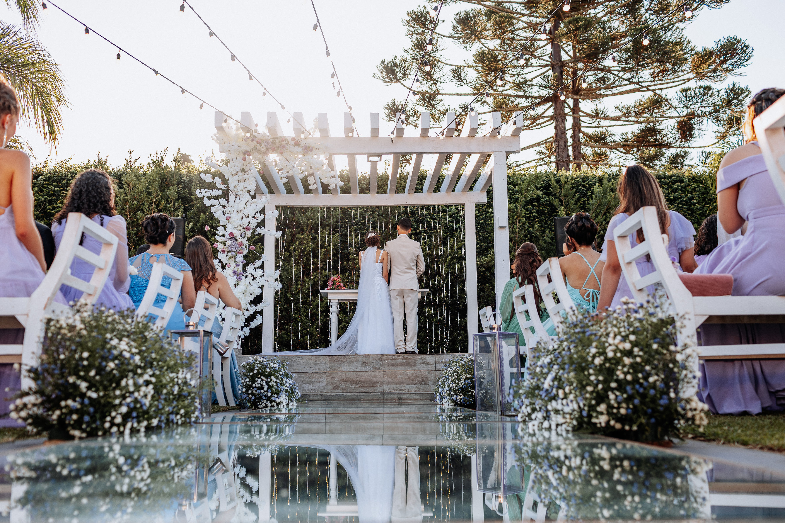
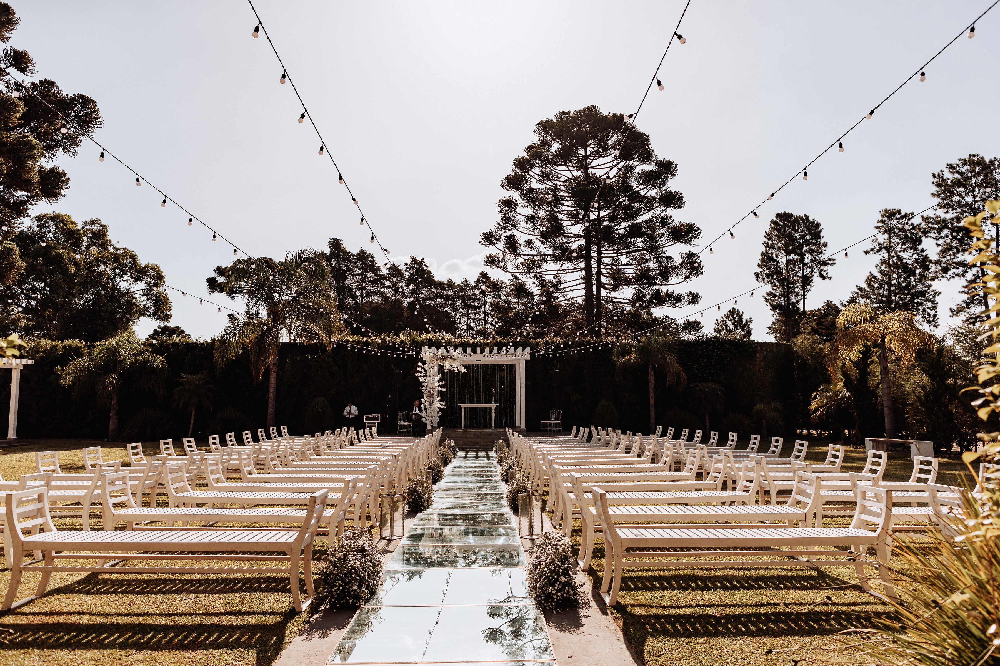

Cada instante merece ser eterno
Elige el formato ideal para tu sesión y transformemos tu visión en una historia para recordar una y otra vez.
Bodas
Para este modelo apreciamos momentos naturales y auténticos.
- Cobertura completa de la ceremonia
- Sesión exclusiva de novios
- Entrega en formato digital de alta calidad

Preboda
Capturando la conexión y el romance antes del gran día
- Localización a elegir en Madrid
- Ambiente relajado y espontáneo
- Ideal para invitaciones personalizadas

Exteriores
Retratos dinámicos aprovechando la luz natural de la ciudad.
- Sesiones urbanas o en naturaleza
- Derección de pose profesional
- Edición editorial incluida

Detalles
Enfocados en la estética de los pequeños grandes elementos.
- Fotografía de producto o decoración
- Macros de alta precisión
- Iluminación controlada para texturas